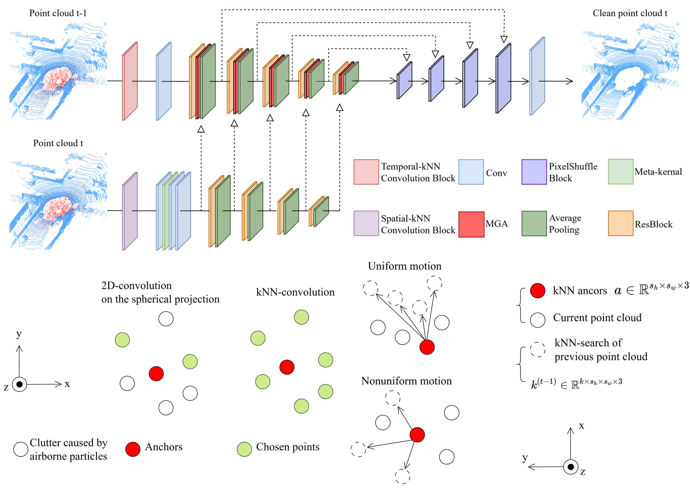
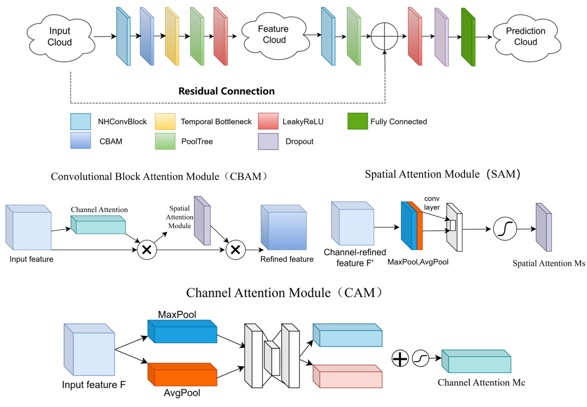
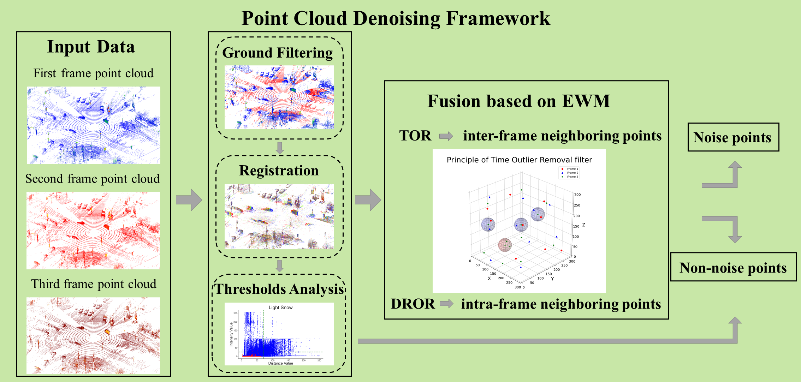

|
| CV |
Email |
Google Scholar |
|
I am a third-year master's student at the School of Geomatics and Urban Spatial Information at Beijing University of Civil Engineering and Architecture, advised by He Huang and Junxing Yang. I received my Bachelor's degree in surveying and mapping at North China University of Water Resources and Electric Power. Goal: Autonomous vehicles can operate safely under adverse weather conditions. Focus: The challenges faced by autonomous driving perception systems under adverse weather conditions. Current research fields: Point cloud denoising, point cloud semantic segmentation, and 3D occupancy prediction. Email: yan1075783878@gmail.com I am currently searching for and applying to PhD programs. If you have any good opportunities related to PhD studies or internships, please feel free to contact me via email. |
{kind=link}
|  |
pdf |
abstract |
bibtex
Autonomous vehicles perceive their surroundings through sensors such as LiDAR. However, snowflakes are distributed within the detection range of LiDAR sensors in snowy weather, generating noise points that compromise the sensor's detection performance. To mitigate this issue, we propose SnowSTNet, a point cloud denoising network that removes snowflake noise from LiDAR point clouds. In SnowSTNet, we adopt a two-branch network structure that encodes information in both spatial and temporal dimensions, and inputs the features obtained from the spatial branch into the temporal branch as guidance. We conducted comparative experiments on the SnowyKITTI dataset, and the results show that our method significantly outperforms others, achieving an MIoU of 97.19%. The proposed SnowSTNet ensures the reliable operation of self-driving vehicles in snowy weather and promotes the widespread application of autonomous driving technology in complex environments.
@Article{isprs-archives-XLVIII-G-2025-921-2025,
AUTHOR = {Li, Y. and Yan, X. and Huang, H. and Liang, Y. and Zhang, Y. and Yang, J.},
TITLE = {SnowSTNet: A Spatial-Temporal LiDAR Point Cloud Denoising Network for Autonomous Driving in Snowy Weather},
JOURNAL = {The International Archives of the Photogrammetry, Remote Sensing and Spatial Information Sciences},
VOLUME = {XLVIII-G-2025},
YEAR = {2025},
PAGES = {921--927},
URL = {https://isprs-archives.copernicus.org/articles/XLVIII-G-2025/921/2025/},
DOI = {10.5194/isprs-archives-XLVIII-G-2025-921-2025}
}
|
|  |
pdf |
abstract |
bibtex
Lidar technology is widely used in the field of autonomous driving by virtue of its high precision. However, under special weather conditions such as rain, snow, fog, etc., suspended particles in the air can contaminate the point cloud data collected by LIDAR, which leads to a significant performance degradation of the vehicle sensing system and increases the driving safety risk. To address this problem, we propose A Time and Attention-Based Point Cloud Denoising Network for Autonomous Driving in Adverse Weather (TADNet). The method is based on the 3D-OutDet network with the addition of Convolutional Block Attention Module (CBAM), which highlights important features and suppresses minor ones. The original ResNet base network architecture is changed to Temporal-Bottleneck ResNet (TB-ResNet) to improve the network's ability to recognize rain, snow and fog noise. We conducted comparative experiments between the TADNet method proposed in this paper and the filter-based point cloud denoising method and the deep learning-based point cloud denoising method. The experimental results show that the denoising effect of TADNet in three kinds of bad weather, namely rain, snow and fog, is better than other methods, which can remove different kinds of noise with different intensities and retain the environmental features, and has the best performance of IoU and MIoU in all kinds of weather conditions.
@Article{isprs-archives-XLVIII-G-2025-1733-2025,
AUTHOR = {Zhang, Y. and Huang, H. and Yan, X. and Liang, Y. and Li, Y. and Yang, J.},
TITLE = {TADNet: A Time and Attention-Based Point Cloud Denoising Network for Autonomous Driving in Adverse Weather},
JOURNAL = {The International Archives of the Photogrammetry, Remote Sensing and Spatial Information Sciences},
VOLUME = {XLVIII-G-2025},
YEAR = {2025},
PAGES = {1733--1739},
URL = {https://isprs-archives.copernicus.org/articles/XLVIII-G-2025/1733/2025/},
DOI = {10.5194/isprs-archives-XLVIII-G-2025-1733-2025}
}
|

|
abstract |
bibtex |
code
In the field of autonomous driving, a pressing issue is how to enable LiDAR to accurately perceive the 3-D environment around the vehicle without being affected by rain, snow, and fog. Specifically, rain, snow, and fog can be present within the LiDAR’s detection range and create noise points. To address this problem, we propose a unified denoising network, AdverseNet, for adverse weather point clouds, which is capable of removing noise points caused by rain, snow, and fog from LiDAR point clouds. In AdverseNet, we adopt the cylindrical triperspective view (CTPV) representation for point clouds and employ a two-stage training strategy. In the first training stage, generic features of rain, snow, and fog noise points are learned. In the second training stage, specific weather features are learned. We conducted comparative experiments on the DENSE dataset and the SnowyKITTI dataset, and the results show that the performance of our method on both datasets is significantly improved compared to other methods, with the Mean Intersection over Union (MIoU) reaching 94.67% and 99.33%, respectively. Our proposed AdverseNet enhances the LiDAR sensing capability in rain, snow, and fog, ensuring the safe operation of autonomous vehicles in adverse weather conditions. The source code is available at https://github.com/Naclzno/AdverseNet.
@ARTICLE{10832503,
author={Yan, Xinyuan and Yang, Junxing and Liang, Yu and Ma, Yanjie and Li, Yida and Huang, He},
journal={IEEE Sensors Journal},
title={AdverseNet: A LiDAR Point Cloud Denoising Network for Autonomous Driving in Rainy, Snowy, and Foggy Weather},
year={2025},
volume={25},
number={5},
pages={8950-8961},
doi={10.1109/JSEN.2024.3505234}}
|
|  |
pdf |
abstract |
bibtex |
code
Adverse weather conditions are one of the long-tailed problems facing autonomous driving. Solving the problem of autonomous driving operation in adverse weather conditions is an important challenge for realizing advanced autonomous driving. To enhance the LiDAR perception capability in snowy weather for autonomous driving, this study proposes a denoising method for multiframe continuous point clouds. The core concept of this method is to allow ordered objects (e.g., stationary objects on the ground) to strengthen each other while allowing disordered objects (e.g., snow) to weaken each other. This is done by first selecting three consecutive frames of the point cloud as a denoising unit and then removing the ground points from each frame of the point cloud. After that, the point clouds from the first two frames are used as the source point clouds, and the point cloud from the third frame is used as the target point cloud for point cloud registration. Finally, the time outlier removal (TOR) filter proposed in this article combined with the entropy weight method (EWM) is utilized for denoising. The experimental results show that the performance of the method proposed in this article exceeds the existing methods. In addition, the method in this article not only removes the disordered snowflakes in the air, but also removes some other disordered noise points (e.g., the ghosting of the stationary objects), which provides an advantageous guarantee for the realization of automatic driving in snowy weather.
@article{yan2024denoising,
title={Denoising Framework Based on Multi-frame Continuous Point Clouds for Autonomous Driving LiDAR in Snowy Weather},
author={Yan, Xinyuan and Yang, Junxing and Zhu, Xinyu and Liang, Yu and Huang, He},
journal={IEEE Sensors Journal},
year={2024},
publisher={IEEE}
}
|

|
pdf |
abstract |
bibtex |
code
As autonomous driving technology advances, ensuring the system's safety in rain and snow has emerged as a pivotal research topic. In rainy and snowy weather, rain and snow can generate noise points within the point cloud captured by the Light Detection and Ranging (LiDAR), significantly impeding the LiDAR's sensing capability. To address this problem, we first manually label the point cloud data gathered in rain and snow, categorizing all points into noise points and non-noise points. Subsequently, we analyze the intensity and spatial distribution characteristics of the rain and snow noise points and employ the gamma distribution curve to illustrate the spatial distribution characteristics of these noise points. Finally, we propose a Low-Intensity Dynamic Statistical Outlier Removal (LIDSOR) filter, an enhancement of the existing Dynamic Statistical Outlier Removal (DSOR) filter. Experimental results suggest that the LIDSOR filter can effectively eliminate rain and snow noise points while preserving more environmental feature points. Additionally, it consumes fewer computational resources. The filter we propose in this paper significantly contributes to the safe operation of the autonomous driving system in diverse complex environments.
@article{huang2023lidsor,
title={LIDSOR: A filter for removing rain and snow noise points from LiDAR point clouds in rainy and snowy weather},
author={Huang, He and Yan, Xinyuan and Yang, Junxing and Cao, Yuming and Zhang, Xin},
journal={The International Archives of the Photogrammetry, Remote Sensing and Spatial Information Sciences},
volume={48},
pages={733--740},
year={2023},
publisher={Copernicus GmbH}
}
|

|
abstract |
bibtex
With the advancement of image processing technology, buildings, streets, and other scenes can now be displayed in 3D panoramas. This study employs 3D panoramic roaming technology, based on the spherical panoramic image stitching method, to achieve integrated air-ground panoramic roaming for the Daxing Campus of Beijing University of Civil Engineering and Architecture. The process of data preprocessing and panoramic roaming production is meticulously documented. The specific functionalities realized in this study include the interaction between aerial and ground scenes, seamless roaming of the campus ground scenes, linkage between panoramic roaming and the navigation map, synchronization of the navigation map to display site points and radar sector positions, and the integration of the roaming system into the server.
@article{Yan2024,
title = {Research on the Production of an Integrated Air-Ground Panoramic Roaming System: A Case Study of Beijing University of Civil Engineering and Architecture},
journal = {12th International Symposium on Project Management, ISPM 2024},
year = {2024},
volume = {1},
pages = {146-154},
author = {Li, Yida and Liu, Yucheng and Yan, Xinyuan and Yu, Dinglong and Yang, Junxing}
}
|
|
Optics and Laser Technology 2025
Scientific Reports 2025 IEEE Journal of Selected Topics in Applied Earth Observations and Remote Sensing (JSTARS) 2025 IEEE Transactions on Intelligent Vehicles (T-IV) 2024 |
|
|
Website template from here |